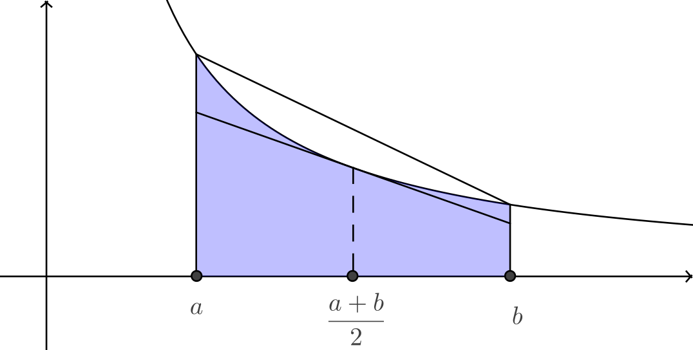

Cauchy-Schwarz 不等式 设 `x_k, y_k` 是非零实数, `k = 1, 2, cdots, n`. 则 `|sum_(k=1)^n x_k y_k|` `le sqrt(sum_(k=1)^n x_k^2)sqrt(sum_(k=1)^n y_k^2)`, 等号成立当且仅当存在实数 `t`, 使得 `y_k = t x_k`, `k = 1, 2, cdots, n`.
设二次函数 `f(t) = sum_(k=1)^n (x_k t - y_k)^2` `= (sum_(k=1)^n x_k^2) t^2 - 2(sum_(k=1)^n x_k y_k) x` `+ sum_(k=1)^n y_k^2 ge 0`. 因此, 其判别式 `Delta/4 = (sum_(k=1)^n x_k y_k)^2 - (sum_(k=1)^n x_k^2)(sum_(k=1)^n y_k^2) le 0`, 此即要证的不等式. 其中 等号成立 `iff Delta = 0` `iff f` 存在惟一实根 `t` `iff EE t in RR`, `x_k t - y_k = 0`, `k = 1, 2, cdots, n`.
由 Lagrange 恒等式 `(sum_(i=1)^n x_i^2)(sum_(i=1)^n y_i^2)` `= (sum_(i=1)^n x_i y_i)^2 + sum_(1 le i lt j le n) (x_i y_j - x_j y_i)^2`. 立即得到 Cauchy 不等式.
设 `x in RR`, `M ge 0`, 则 `|x| le M iff -M le x le M`.
实数的三角不等式 设 `x, y in RR`, 则 `|x+y| le |x| + |y|`, 等号成立当且仅当 `x, y` 同号, 即 `x y ge 0`.
显然 `|x| le |x|`, `|y| le |y|`, 由引理, 这等价于 `-|x| le x le |x|`, `quad -|y| le y le |y|`. 两式相加, `-(|x|+|y|) le x+y le |x|+|y|`. 再由引理, 这等价于要证的不等式. 等号成立当且仅当 (`x = |x|` 且 `y = |y|`) 或 (`x = -|x|` 且 `y = -|y|`). 这等价于 `x y ge 0`.
设 `x, y in RR`, 则 `|{:|x| - |y|:}| le |x + y| le |x| + |y|`. 第一个等号成立当且仅当 `x y le 0`, 第二个等号成立当且仅当 `x y ge 0`.
由三角不等式得 `|x| = |(x+y)+(-y)| le |x+y| + |y|`, 即 `|x| - |y| le |x+y|`; 同理 `|y| - |x| le |x+y|`, 所以得到左边的不等式. 这个不等式的等号成立当且仅当 `(x+y)(-y) ge 0`, 或 `(y+x)(-x) ge 0`. 两种情形都推出 `x y le 0`. 反之若 `x y le 0`, 不妨设 `|x| ge |y|`, 则不等式左边等于 `|x|-|y|`, 而另一边等于 `|x+y| = |x|-|y|`, 所以两边相等.
Euclid 空间的三角不等式 设 `bm x = (x_1, x_2, cdots, x_n)`, `bm y = (y_1, y_2, cdots, y_n) in E^n`, 则 `|bm x + bm y| le |bm x| + |bm y|`, 即 `sqrt(sum_(k=1)^n (x_k+y_k)^2)` `le sqrt(sum_(k=1)^n x_k^2) + sqrt(sum_(k=1)^n y_k^2)`.
事实上, 这是 Minkowski 不等式取 `p = 2` 的情形. 当然也可以用 Cauchy 不等式证之: `sum_(k=1)^n (x_k+y_k)^2` `= sum_(k=1)^n x_k^2 + sum_(k=1)^n y_k^2 + 2 sum_(k=1)^n x_k y_k` `le sum_(k=1)^n x_k^2 + sum_(k=1)^n y_k^2` `+ 2 sqrt(sum_(k=1)^n x_k^2) sqrt(sum_(k=1)^n y_k^2)` `= (sqrt(sum_(k=1)^n x_k^2) + sqrt(sum_(k=1)^n y_k^2))^2`. 两边开方即得结果.
Jensen 不等式 设 `f` 是区间 `I` 上的下凸函数, `x_k in I`, `w_k in (0, 1)`, `k = 1, 2, cdots, n`. 其中 `sum_(k=1)^n w_k = 1`. 则 `f(sum_(k=1)^n w_k x_k) le sum_(k=1)^n w_k f(x_k)`. 进一步, 若 `f` 在 `I` 上严格下凸, 则不等式中等号成立当且仅当 `x_1 = x_2 = cdots = x_n`. 另外, 若 `f` 在 `I` 上是上凸函数, 取 `g = -f` 知, 对 `f` 成立反向的不等号.
对 `n` 进行归纳. `n = 1` 时不等式是平凡的等式. 设不等式对 `n-1 ge 1` 成立, 则对正整数 `n`, 有 `f(sum_(k=1)^n w_k x_k)` `= f(sum_(k=1)^(n-1) w_k x_k + w_n x_n)` `= f((1-w_n) sum_(k=1)^(n-1) (w_k x_k)/(1-w_n) + w_n x_n)` (由函数下凸) `le (1-w_n) f(sum_(k=1)^(n-1) (w_k x_k)/(1-w_n)) + w_n f(x_n)` (由归纳假设) `le (1-w_n) sum_(k=1)^(n-1) (w_k f(x_k))/(1-w_n) + w_n f(x_n)` `= sum_(k=1)^n w_k f(x_k)`. 如果 `f` 是严格下凸函数且 `x_1, x_2, cdots, x_n` 不全相等, 那么当 `sum_(k=1)^(n-1) (w_k x_k)/(1-w_n) != x_n` 时, 上面推导的第一个不等式中的等号不成立. 而 `sum_(k=1)^(n-1) (w_k x_k)/(1-w_n) = x_n` 时, 则断言 `x_1, x_2, cdots, x_(n-1)` 不全相等 (否则设 `x_1 = x_2 = cdots = x_(n-1)`, 有 `x_n = sum_(k=1)^(n-1) (w_k x_k)/(1-w_n)` `= x_1 sum_(k=1)^(n-1) w_k/(1-w_n)` `= x_1 = x_2 = cdots = x_(n-1)`, 矛盾). 由归纳假设, 只要 `x_1, x_2, cdots x_(n-1)` 不全相等, 上面推导的第二个不等式的等号不成立. 从而上面的不等式是严格不等式.
Young 不等式 设 `x, y gt 0`, `p, q gt 1`, 且 `1/p + 1/q = 1`, 则 `x y le x^p/p + y^q/q`. 等号成立当且仅当 `x^p = y^q`.
由于 `f(x) = ln x` 是严格上凸函数, 所以对 `x^p, y^q gt 0` 有 `1/p ln x^p + 1/q ln y^q le ln (x^p/p + y^q/q)`. 其中等号成立当且仅当 `x^p = y^q`. 取指数即得结论.
设 `p, q gt 1`, 则 `1/p + 1/q = 1 iff p + q = p q iff (p-1)(q-1) = 1`.
Young 不等式的几何解释: 令 `y = x^(p-1)`, 则 `x = y^(q-1)`, 即 `y = x^(p-1)` 和 `x = y^(q-1)` 表示同一条曲线. 由积分的几何意义, 矩形的面积小于等于两个曲边三角形的面积之和, 即 `a b le int_0^a x^(p-1) dx + int_0^b y^(q-1) dy` `= a^p/p + b^q/q`.
Hölder 不等式 (Hardy 不等式) 设 `x_k, y_k gt 0`, `k = 1, 2, cdots, n`. `p, q gt 1` 且 `1/p+1/q = 1`. 则 `sum_(k=1)^n x_k y_k le (sum_(k=1)^n x_k^p)^(1/p) (sum_(k=1)^n y_k^q)^(1/q)`. 特别取 `p = q = 2` 时, 得到 Cauchy 不等式. 这个不等式的另一种形式是 (取 `alpha = p^-1`, `beta = q^-1`): `sum_(k=1)^n x_k^alpha y_k^beta le (sum_(k=1)^n x_k)^alpha (sum_(k=1)^n y_k)^beta`.
记 `sum_(k=1)^n x_k^p = A`, `sum_(k=1)^n y_k^q = B`. 使用 Young 不等式, 对 `k = 1, 2, cdots, n` 有 `(x_k^p/A)^(1/p) (y_k^q/B)^(1/q)` `le 1/p x_k^p/A + 1/q y_k^q/B`. 关于 `k` 求和, `1/(A^(1/p) B^(1/q)) sum_(k=1)^n x_k y_k le 1/p + 1/q = 1`. 所以原不等式成立.
Minkowski 不等式 设 `x_k, y_k gt 0`, `k = 1, 2, cdots, n`. 又设 `p ge 1`, 则 `(sum_(k=1)^n (x_k+y_k)^p)^(1/p) le (sum_(k=1)^n x_k^p)^(1/p) + (sum_(k=1)^n y_k^p)^(1/p)`. Mindowski 不等式适合用作一些度量空间的三角不等式.
`p = 1` 的情形是平凡的. 下面设 `p gt 1`,
取实数 `q` 使得 `1/p + 1/q = 1`. 由 Hölder 不等式有
`sum_(k=1)^n x_k (x_k+y_k)^(p//q) le (sum_(k=1)^n x_k^p)^(1/p)
(sum_(k=1)^n (x_k+y_k)^p)^(1/q)`,
`sum_(k=1)^n y_k (x_k+y_k)^(p//q) le (sum_(k=1)^n y_k^p)^(1/p)
(sum_(k=1)^n (x_k+y_k)^p)^(1/q)`.
两式相加, 注意 `p/q + 1 = p/q + p/p = p`,
`sum_(k=1)^n (x_k+y_k)^p`
`le [(sum_(k=1)^n x_k^p)^(1/p) + (sum_(k=1)^n y_k^p)^(1/p)]`
`(sum_(k=1)^n (x_k+y_k)^p)^(1/q)`.
两边同乘以 `(sum_(k=1)^n (x_k+y_k)^p)^(-1/q)` 即得结果.
虽然我们是用 Young 不等式导出了本节后面的几个不等式, 但实际上, 包括 Young 不等式在内, 它们都能用 Jensen 不等式直接导出. 例如, 取 `f(x) = x^(1/p)`, 其中 `p gt 1`, 则 `f''(x) lt 0`. 应用 Jensen 不等式得到凸性不等式 `sum_(k=1)^n t_k x_k^(1/p) le (sum_(k=1)^n t_k x_k)^(1/p)`, 其中 `x_k gt 0`, `t_k in (0,1)`, `sum_(k=1)^n t_k = 1`. Hölder 不等式是此不等式的直接推论.
一个配方不等式 设 `x, y in RR`, 则 `(x-y)^2 ge 0` `rArr 2 x y le x^2 + y^2`. 显见等号成立当且仅当 `x = y`.
在引理的不等式两边同时加上 `x^2+y^2` 得 `(x+y)^2 le 2(x^2+y^2)`. 可以用 `x^2, y^2` 分别代替原不等式的 `x, y`, 得到 `2 x^2 y^2 le x^4 + y^4`, `(x^2+y^2)^2 le 2(x^4 + y^4)`, 等等. 如果用 `sqrt x, sqrt y` 分别代替引理中不等式的 `x, y`, 就得到:
二元均值不等式 设 `x, y gt 0`, 则 `sqrt(x y) le (x+y)/2`, 等号成立当且仅当 `x = y`.
均值不等式 设 `x_1, x_2, cdots, x_n gt 0`, 则 `root n (prod_(k=1)^n x_k) le 1/n sum_(k=1)^n x_k`, 等号成立当且仅当 `x_1 = x_2 = cdots = x_n`.
利用 Jensen 不等式的简单证明. 取 `f(x) = ln x`, 它是区间 `(0, +oo)` 上的上凸函数. 取 `t_k = 1/n`, 于是对任意 `x_1, x_2, cdots, x_n gt 0`, `1/n sum_(k=1)^n ln x_k le ln(1/n sum_(k=1)^n x_k)`, 等号成立当且仅当 `x_1 = x_2 = cdots = x_n`. 两端取指数, 得到 `root n(prod_(k=1)^n x_k) le 1/n sum_(k=1)^n x_k`.
对 `n` 进行归纳证明. `n = 1` 时不等式是平凡的等式.
假设不等式对 `n ge 1` 成立, 则对正整数 `n+1`, 记 `A_n = 1/n
sum_(k=1)^n x_k`, 有
`A_(n+1)`
`= 1/2 ((n+1)/n A_(n+1) + (n-1)/n A_(n+1))`
`= 1/2 (1/n sum_(k=1)^(n+1) x_k + (n-1)/n A_(n+1))`
`= 1/2 (1/n sum_(k=1)^n x_k + 1/n x_(n+1) + (n-1)/n A_(n+1))`
(归纳假设)
`ge 1/2 (root n(prod_(k=1)^n x_k)
+ root n(x_(n+1) * A_(n+1)^(n-1)))`
(二元均值不等式)
`ge root (2n)(prod_(k=1)^(n+1) x_k * A_(n+1)^(n-1))`.
整理得到
`A_(n+1) ge root(n+1)(prod_(k=1)^(n+1) x_k)`.
因此不等式对任意正整数 `n` 成立.
再看取等条件. 这个条件的充分性显然, 下证必要性.
`n = 2` 时, 二元均值不等式的取等条件是 `x_1 = x_2`.
现在设取等条件对 `n` 元均值不等式成立, 则当 `n+1`
元均值不等式取得等号时, 上述推导过程的两个不等式中的等号都应当成立,
即 `prod_(k=1)^n x_k = x_(n+1) A_(n+1)^(n-1)`,
且 `x_1 = x_2 = cdots = x_n`.
记 `x_k^(1//(n-1)) = a_k`, 有
`x_1^n = x_(n+1) ((n x_1 + x_(n+1))/(n+1))^(n-1)`,
`(n+1) a_1^n = a_(n+1) (n x_1 + x_(n+1))`,
`n a_1^(n-1) (a_1 - a_(n+1)) + a_1^n - a_(n+1)^n = 0`,
`(a_1-a_(n+1))` `(n a_1^(n-1)
+ sum_(k=0)^(n-1) a_1^k a_(n+1)^(n-k)) = 0`.
这推出 `a_1 = a_(n+1)`, 从而 `x_1 = x_2 = cdots = x_n = x_(n+1)`,
证毕.
设 `x_1, x_2, cdots, x_n gt 0`, 则 `(1/n sum_(k=1)^n x_k^-1)^-1` `le exp(1/n sum_(k=1)^n ln x_k)` `le 1/n sum_(k=1)^n x_k` `le (1/n sum_(k=1)^n x_k^2)^(1/2)`, 所有等号成立当且仅当 `x_1 = x_2 = cdots = x_n`.
我们把 `(1/n sum_(k=1)^n x_k^-1)^-1` 称为这 `n` 个数的调和平均数, `exp(1/n sum_(k=1)^n ln x_k)` `= root n(prod_(k=1)^n x_k)` 称为它们的几何平均数, `1/n sum_(k=1)^n x_k` 称为它们的算术平均数. 下图展示了二元均值不等式:
设 `a, b gt 0`. 证明: 数列 `x_n = root(n)((a^n+b^n)/2)` 单调递增.
(zmx可以从这道题的证明中凭吊高中时代的遗迹) 只需证对任意正整数 `n`, ` root(n)((a^n+b^n)/2) le root(n+1)(( a^(n+1) + b^(n+1) )/2)`. 即证 `(a^n+b^n)^(n+1) le 2( a^(n+1)+b^(n+1) )^n`. 当 `n=1` 时, 上述不等式即 `(a+b)^2 le 2(a^2+b^2)`, 显然成立. 假设当 `n=k` 时不等式成立, 即 `(a^k+b^k)^(k+1) / ( a^(k+1)+b^(k+1) )^k le 2`. 则 `n=k+1` 时, 断言 ` ( a^(k+1)+b^(k+1) )^(k+2) / ( a^(k+2)+b^(k+2) )^(k+1) le (a^k+b^k)^(k+1) / ( a^(k+1)+b^(k+1) )^k` 成立, 这只要证 ` ( a^(k+1)+b^(k+1) )^(2(k+1)) le [ (a^k+b^k) ( a^(k+2) + b^(k+2) ) ] ^ (k+1)`, 即证 ` ( a^(k+1)+b^(k+1) )^2 le (a^k+b^k)( a^(k+2)+b^(k+2) )`, 即证 `2(ab)^(k+1) le (ab)^k (a^2+b^2)`. 即证 `2ab le a^2+b^2`. 这显然成立. 所以 成立, 从而 `n=k+1` 时不等式成立. 再由数学归纳法知原命题成立.
此定理是均值不等式的推广. `x_1, x_2, cdots, x_n` 的函数 `(1/n sum_(k=1)^n x_k^alpha)^(1/alpha)` 在参数 `alpha` 取 `-oo`, `-1`, `0`, `1`, `+oo` 时, 分别取得最小值, 调和平均, 几何平均, 算术平均和最大值.
曲边梯形不等式 设 `f` 是 `[a, b]` 上可积的下凸函数, 则 `f((a+b)/2) le 1/(b-a) int_a^b f(x) dx le (f(a)+f(b))/2`. 当 `f` 严格凸时, 不等号严格成立. 这个不等式的几何意义是, `f` 的图像在 `[a,b]` 上围成的曲边梯形面积 大于它在 `x = (a+b)/2` 处的内切梯形面积, 但小于它的外接梯形面积. 
记 `I = 1/(b-a) int_a^b f(x) dx`, 令 `x = a + t(b-a) = (1-t)a + t b`, 则 `I = int_0^1 f[(1-t)a+t b] dt` `le int_0^1 [(1-t) f(a) + t f(b)] dt` `= (f(a)+f(b))/2`. 另一方面, 令 `x = a+b-s`, `(b-a) I = int_a^b f(a+b-s) "d"s` `= 1/2 int_a^b [f(x) + f(a+b-x)] dx` `ge int_a^b f((x+a+b-x)/2) dx` `= (b-a)f((a+b)/2)`.
对数均值不等式 (ALG 不等式, 奥利给不等式)
设 `a, b` 是不相等的正数, 则
`(a+b)/2 gt (a-b)/(ln a - ln b) gt sqrt(a b)`,
即 `A gt L gt G`. 这一不等式刻画了 `ln {:a/b:}` 的上下界.
微分学的证明. 设
`f(x) = sqrt x - 1/sqrt x - ln x`,
`quad g(x) = 2 (x-1)/(x+1) - ln x`.
计算知 `f(1) = g(1) = 0 = ln(1)`, 且在 `(0, +oo)` 上
`f'(x) ge 0`, `g'(x) le 0`. 于是得到:
`ln x` 的值介于 `sqrt x - 1/sqrt x` 和 `2(x-1)/(x+1)` 之间, 其中
`sqrt x - 1/sqrt x lt ln x lt 2(x-1)/(x+1)`, `quad 0 lt x lt 1`,
`2(x-1)/(x+1) lt ln x lt sqrt x - 1/sqrt x`, `quad x gt 1`.
不妨设 `a gt b`, 取 `x = a/b`, 得到
`2(a-b)/(a+b) lt ln a - ln b lt sqrt(a/b) - sqrt(b/a)`.
不等号两边同除以 `a-b` 即得证.
积分学的证明.
分别在 `[a, b]` 和 `[a, sqrt(a b)]` 上对 `f(x) = 1/x`
应用曲边梯形不等式, 有
`2/(a+b) lt (ln b - ln a)/(b-a)`,
`(ln sqrt(a b) - ln a)/(sqrt(a b) - a) lt (a^-1 + (a b)^(-1/2))/2`.
整理即得结论.
若 `f(x) = "e"^x - a x` 有两个不同的零点 `x_1`, `x_2`, 则 `x_1 x_2 lt 1`, `quad 2 lt x_1 + x_2 lt 2 ln a`.
由题意 `"e"^(x_1) = a x_1`, `quad "e"^(x_2) = a x_2`, 取对数得 `x_1 = ln a + ln x_1`, `quad x_2 = ln a + ln x_2`. 因此 `x_1 - x_2 = ln x_1 - ln x_2`. 由对数均值不等式有 `sqrt(x_1 x_2) lt 1 lt (x_1+x_2)/2`, 从而得 `x_1 x_2 lt 1`, `x_1 + x_2 gt 2`. 再由 得到 `x_1 + x_2 = 2 ln a + ln x_1 x_2 lt 2 ln a`.
Jensen 不等式的积分形式
设 `x(t)` 在 `[a, b]` 上可积, 值域含于区间 `I`;
`f` 是区间 `I` 上连续的下凸函数;
`w(t)` 在 `[a, b]` 上可积, `w(t) gt 0`, 且 `int_a^b w(t) dt = 1`, 则
`f(int_a^b w(t) x(t) dt)`
`le int_a^b w(t) f(x(t)) dt`.
特别取 `w(t) -= 1/(b-a)` 得,
`f(1/(b-a) int_a^b x(t) dt)`
`le 1/(b-a) int_a^b f(x(t)) dt`.
取 `g = -f` 知, 对上凸函数成立反向的不等号.
[欧阳资考. 2011. 利用凸函数证明积分不等式. 高等教育, 第 107 期]
易知不等式中出现的积分都有意义. 将 `[a, b]` `n` 等分, 记 `h = (b-a)//n`, `t_k = a+k h`, `x_k = x(t_k)`, `w_k = w(t_k)`, `y_k = w_k/(sum_(k=1)^n w_k)`, `k = 1, 2, cdots, n`. 因为 `f` 为上凸函数, 由 Jensen 不等式, `f(sum_(k=1)^n x_k y_k)` `le sum_(k=1)^n f(x_k) y_k`, 即 `f((sum_(k=1)^n w_k x_k h)/(sum_(k=1)^n w_k h))` `le (sum_(k=1)^n w_k f(x_k) h)/(sum_(k=1)^n w_k h)`. 令 `n to oo`, 注意 `f` 的连续性, 极限符号可转移到 `f` 的括号内. 从而由定积分的定义即得结果.
假设定理中的 `x(t)` 在 `[a,b]` 上单调增, 于是 `f @ x` 仍是 `[a,b]` 上的下凸函数, 类比曲边梯形不等式的证明方法可以得到, `1/(b-a) int_a^b f(x(t)) dt le (f(x(a)) + f(x(b)))/2`.
`bm p` 方可积 设 `p ge 1`, 函数 `f` 在定义域 `[a,b]` 上只有有限个瑕点, 且 `f` 在任意不含这些瑕点的闭子区间上都 Riemann 可积. 如果 `|f(x)|^p` 在 `[a,b]` 上广义 Riemann 可积, 即瑕积分 `int_a^b |f(x)|^p dx lt oo`, 则称 `f` 在 `[a,b]` 上 `bm p` 方可积. 特别当 `p = 1` 时, 称 `f` 在 `[a,b]` 上绝对可积, `p = 2` 时, 称 `f` 在 `[a,b]` 上平方可积.
`p` 方可积函数的任意线性组合也 `p` 方可积.
设 `f,g` 在 `[a,b]` 上 `p` 方可积, 显然对任意常数 `c`, 函数 `c f` 也在 `[a,b]` 上 `p` 方可积. 下证函数 `f+-g` 在 `[a,b]` 上 `p` 方可积. 只需注意对 `AA x in [a,b]` 有 `|f(x) +- g(x)|^p` `le (|f(x)|+|g(x)|)^p` `le (2 max{|f(x)|, |g(x)|})^p` `= 2^p max{|f(x)|^p, |g(x)|^p}` `le 2^p (|f(x)|^p + |g(x)|^p)`, 据此立得结论.
设 `1 le p lt q`, 若函数 `f` 在 `[a,b]` 上 `q` 方可积, 则它也在 `[a,b]` 上 `p` 方可积.
Hölder 不等式 设 `p, q gt 1` 且 `1/p+1/q = 1`. 如果 `f` 在 `[a,b]` 上 `p` 方可积, `g` 在 `[a,b]` 上 `q` 方可积, 则乘积 `f g` 在 `[a,b]` 上绝对可积, 且 `int_a^b |f(x)g(x)| dx` `le (int_a^b |f(x)|^p dx)^(1/p) (int_a^b |g(x)|^q dx)^(1/q)`. 特别取 `p = q = 2`, 得到 Cauchy 不等式 `int_a^b |f(x) g(x)| dx` `le sqrt(int_a^b |f(x)|^2 dx) sqrt(int_a^b |g(x)|^2 dx)`.
记 `int_a^b |f(x)|^p dx = A`, `int_a^b |g(x)|^q dx = B`. 使用 Young 不等式, 对 `AA x in [a,b]` 有 `(|f(x)|^p/A)^(1/p) (|g(x)|^q/B)^(1/q)` `le 1/p |f(x)|^p/A + 1/q |g(x)|^q/B`. 因为不等式右端函数在 `[a,b]` 上广义可积, 所以左端也可以. 积分得 `1/(A^(1/p) B^(1/q)) int_a^b |f(x) g(x)| dx` `le 1/p + 1/q = 1`. 所以原不等式成立.
下面两个不等式可以仿照上文对应不等式来证明.
Minkowski 不等式 设 `p ge 1`, `f, g` 都在 `[a,b]` 上 `p` 方可积, 则 `(int_a^b |f(x) + g(x)|^p dx)^(1/p)` `le (int_a^b |f(x)|^p dx)^(1/p) + (int_a^b |g(x)|^p dx)^(1/p)`.
幂平均值不等式 设 `f` 在 `[a,b]` 上 `p` 方可积, `p ge 1`, 则函数 `(1/(b-a)int_a^b|f(x)|^alpha dx)^(1/alpha)` 关于参数 `alpha` 单调递增.
设 `x, y, z ge 0`, `t in RR`, 则 `sum_"cyc" x^t(x-y)(x-z) ge 0`, "`=`" 成立当且仅当 `x = y = z`, 或其中两数相等且另一数为零. 特别当 `t` 为非负偶数时, 不等式对任意实数 `x, y, z` 成立.
不妨设 `x ge y ge z ge 0`. 则 `t gt 0` 时 `x^t ge y^t`, `t lt 0` 时 `z^t ge y^t`, 总之有 `x^t-y^t+z^t ge 0`. 于是 `sum_"cyc" x^t(x-y)(x-z)` `= x^t(x-y)(x-y+y-z)` `+ y^t(y-z)(y-x)` `+ z^t(z-y+y-x)(z-y)` `= x^t(x-y)^2 + z^t(y-z)^2` `+ (x^t-y^t+z^t)(x-y)(y-z)` `ge 0`. 分析上式最后一个不等号左边三项, 得到原式等于零当且仅当 `(x = 0 or x = y)` `and (z = 0 or y = z)` `and (x = y or y = z)`. 从而得到: "`=`" 成立当且仅当 `x = y = z`, 或其中两数相等且另一数为零. 另外容易看到 `t` 是非负偶数时, 不等式也成立.
p 级数部分和 `sum_(k=1)^n 1/k^p` 的估计 设 `k ge 2`, 有 `1/(k(k+1)) lt 1/k^2 lt 1/(k(k-1))`. 在这个不等式两边求和, 可以得到 `sum_(k=a)^b 1/k^2` 的上下界估计. 如 `sum_(k=1)^n 1/k^2 gt sum_(k=1)^n 1/(k(k+1)) = 1 - 1/(n+1)`, `quad n ge 1`. 然而这个结果没有什么用, 因为仅从第 1 项就可以看出它大于 1. 但我们可以从第 2 项开始放缩, 得到 `sum_(k=1)^n 1/k^2 gt 1 + sum_(k=2)^n 1/(k(k+1)) = 3/2 - 1/(n+1)`, `quad n ge 2`. 这是一个更好的下界. 现在估计它的上界, 有 `sum_(k=1)^n 1/k^2 lt 2 - 1/n`, `quad n ge 2`. 若 `n ge 3`, 从第 3 项开始放缩, 上界可降低到 `7/4 - 1/n`. 若从第 4 项开始放缩, 可进一步降低至 `61/36 - 1/n`. 事实上, Basel 问题告诉我们, `sum_(k=1)^oo 1/k^2 = pi^2/6 = 1.644934...` 类似地, 我们还有 `1/(sqrt k + sqrt(k+1)) lt 1/(2 sqrt k) lt 1/(sqrt k + sqrt(k-1))`, `quad k ge 2`. 以及 (证明在这里) `ln{:(k+1)/k:} lt 1/k lt ln{:k/(k-1):}`, `quad k ge 2`. 两边求和就可得到 `sum_(k=a)^b 1/sqrt k`, `sum_(k=a)^b 1/k` 的上下界.
已知 `x y^2 (x+y) = 9`, 求 `min(2x+y)`.
设 `2x+y = a x + b y + b y + c(x+y)`, 我们有: `a + c = 2`, `quad 2b + c = 1`, 注意均值不等式的取等条件 `a x = b y = c(x+y)` 必须成立, 因此有 `a x = c(x+y) = cx(1+a/b)`, 即 `a = c(1+a/b)`. 从 `a, b, c` 满足的三个方程中解得 `a = 1 + sqrt2/2`, `b = 1/(2sqrt2)`, `c = 1-sqrt2/2`. 于是 `2x+y = (1+sqrt2/2)x + y/(2sqrt2) + y/(2sqrt2) + (1-sqrt2/2)(x+y)` `ge 4[(1+sqrt2/2)x * y/(2sqrt2) * y/(2sqrt2) * (1-sqrt2/2)(x+y)]^(1//4)` `= 4 * root 4 (9/16) = 2sqrt3`.